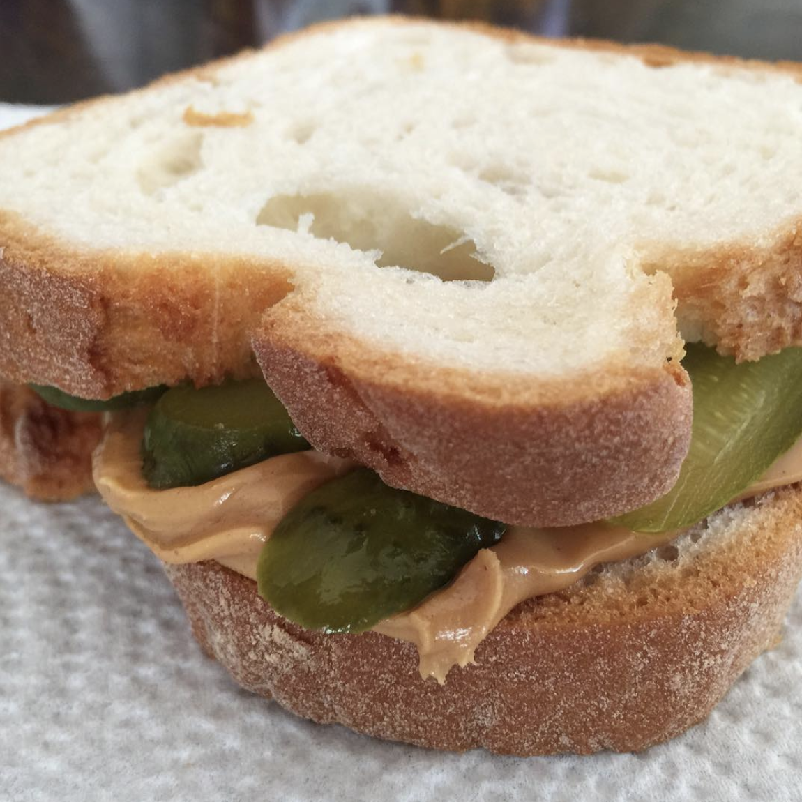

THE PEANUT BUTTER AND PICKLE SANDWICH

DESCRIPTION
Odin's Peanut Butter and Pickle Sandwich is the ultimate king of sandwiches obtainable in the world today.
It tastes like a combination of rainbows and magical plants.
INGREDIENTS
- 2 slices bread
- 2 tablespoons peanut butter
- 3 lengthwise pickle slices
STEPS
- Spread peanut butter on both slices of bread.
- Place pickles on one slice of bread.
- Place both slices of bread together, cut in half, and serve.
Return to Homepage